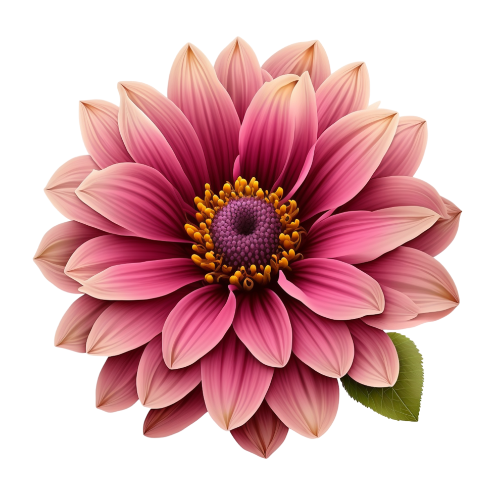
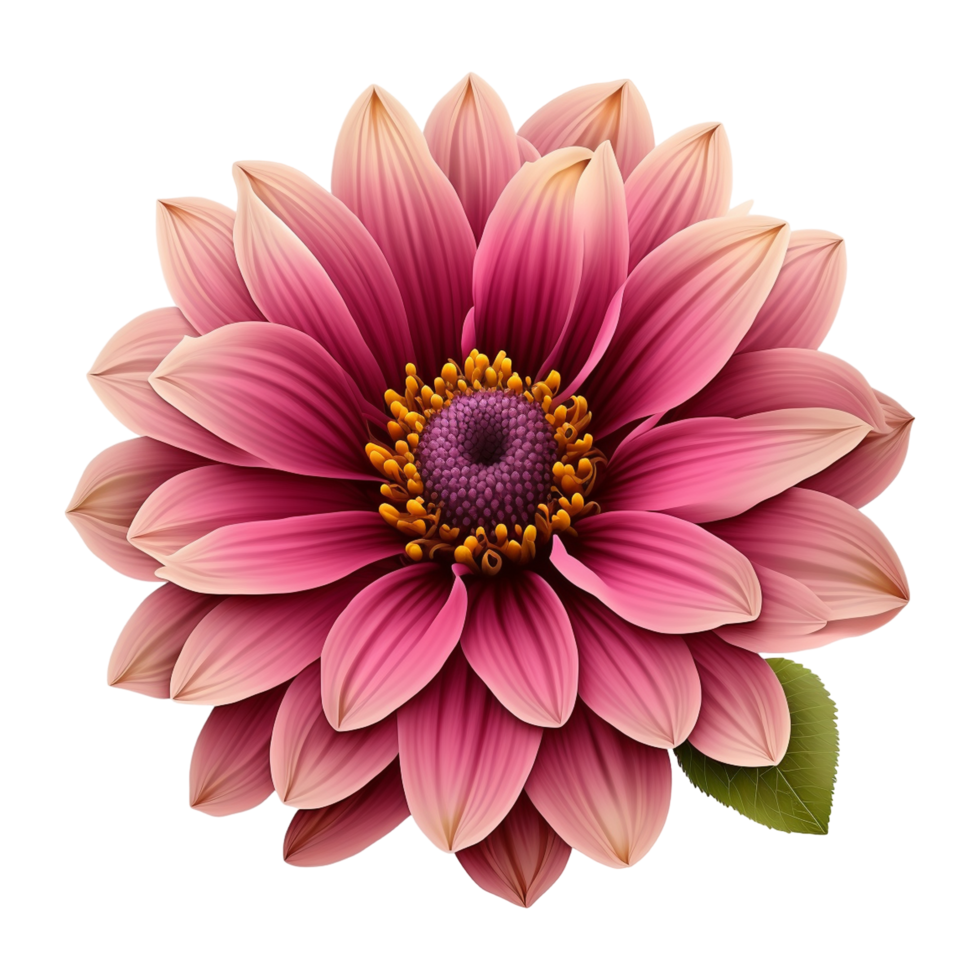

The use of flowers as a communication method existed centuries before email, text, and instant messaging.
Fluorography, the language of flowers, was very popular in the 18th and 19th centuries.
Although there are more ways to communicate, flowers are just as meaningful today as hundreds of years ago.
Flowers representing each month of the year have a different meaning, and the flower recipient feels special.
This is why people choose to send birthday flowers online to recipients to add definition to gifts and birthday celebrations.
Birth flowers are symbolic of the month we were born, and each one has its significance.
Let’s examine the birth flowers of each month, along with what each one represents.
~Find your flower according to your birth month and discover what it means about you~
It is believed that the first carnation emerged from Mary’s tears when she shouted for Jesus. The meaning of carnation depends on the color, but it generally symbolizes
dedication and love.
Violets symbolize loyalty, humility, and spiritual wisdom.
Daffodil (Narcissus) symbolizes prosperity, good luck, and optimism.
Daisies represent innocence, loyalty, and transformation. Therefore, April babies must be the sweet, kind, and loyal people you need in your life.

The lily of the valley is a symbol of humility, sweetness, happiness, and a return to motherhood
The rose symbolizes love,
and its meaning can vary depending on its color. For example, a red rose symbolizes romantic love and a yellow rose symbolizes friendship.
Larkspur flowers are associated with aristocrats
and positivity
Gladiolus flowers symbolise power, moral integrity, and generosity.

Aster is well known for symbolising love, wisdom, innocence, and faith.
Marigold, one of the most potent flowers in autumn, represents stubbornness and determination. However, due to its bright and colourful nature, it also symbolises warmth and creativity.
Many chrysanthemum
colours give them many
symbolic meanings. They
symbolise friendship,
honesty, happiness, and beauty
Holly flowers
symbolise good wishes,
hopes, and wealth


 
